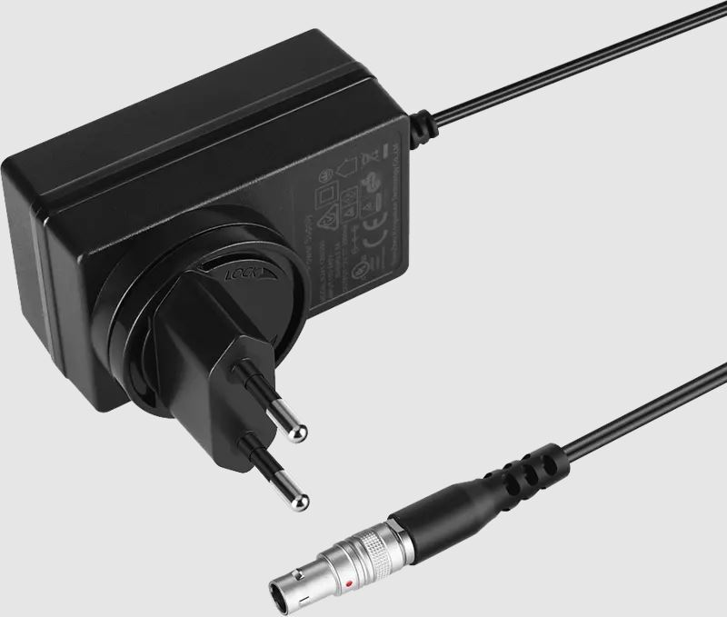

DC to 2-pin LEMO Cable
This DC to 2-pin LEMO cable provides a reliable connection for powering various professional cameras and accessories. The DC barrel connector on one end securely fits most common DC outputs, while the 2-pin LEMO connector on the other end ensures a stable link to compatible devices such as ARRI and other high-end camera systems.
Constructed with high-quality materials and sturdy strain relief, this cable is designed to withstand the rigors of on-location shoots and daily studio use. Its flexible design makes routing around rigs, tripods, or shoulder mounts easy and tangle-free. Whether you're working on a film set or a broadcast production, this cable helps deliver consistent power to your gear.
